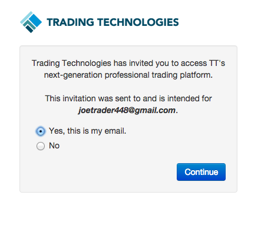

To trade in the production environment, you must register your TT account with your trading or clearing firm by joining a "company" in the TT system. To begin the process of joining a company, contact your company administrator, who will send you an invitation to join via email. When the invitation is sent, you'll receive an email to "Get Started".
To join a company:
Click the Get Started button in the email you receive.
In the TT Platform login screen that appears, enter your login and password in the SIGN IN section.
Note: When logging in to TT, your account will lock out after 5 incorrect attempts.
Tip: If you do not yet have a TT account, enter your email address and click Create Account.

- Before accepting the invitation, review the verification screen to make sure the invite is being sent to the correct email address and click Continue.

Click 'Accept Invitation' to complete the process.
Note: When you accept an invitation to join your firm, you will give up your access to the TT Demo environment.